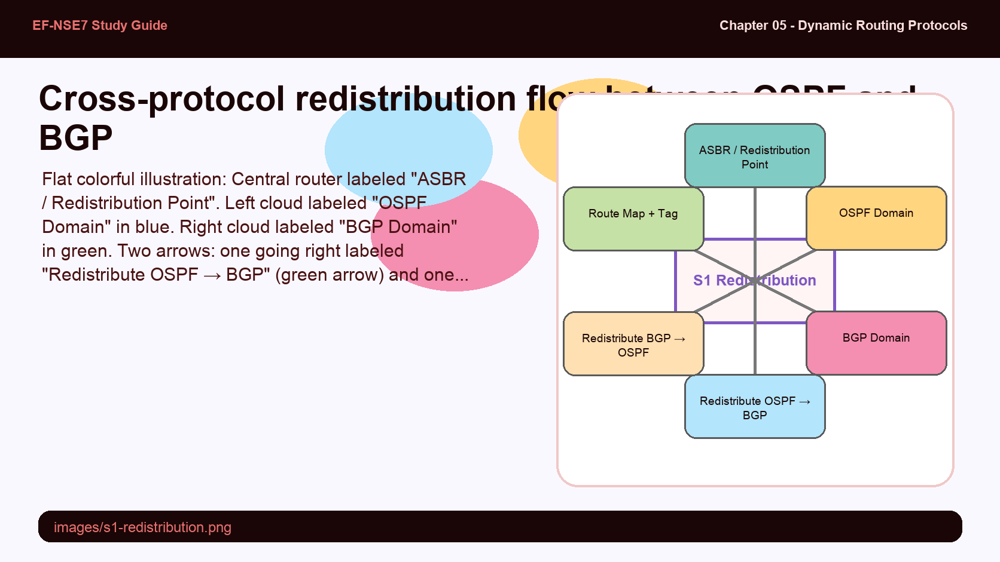
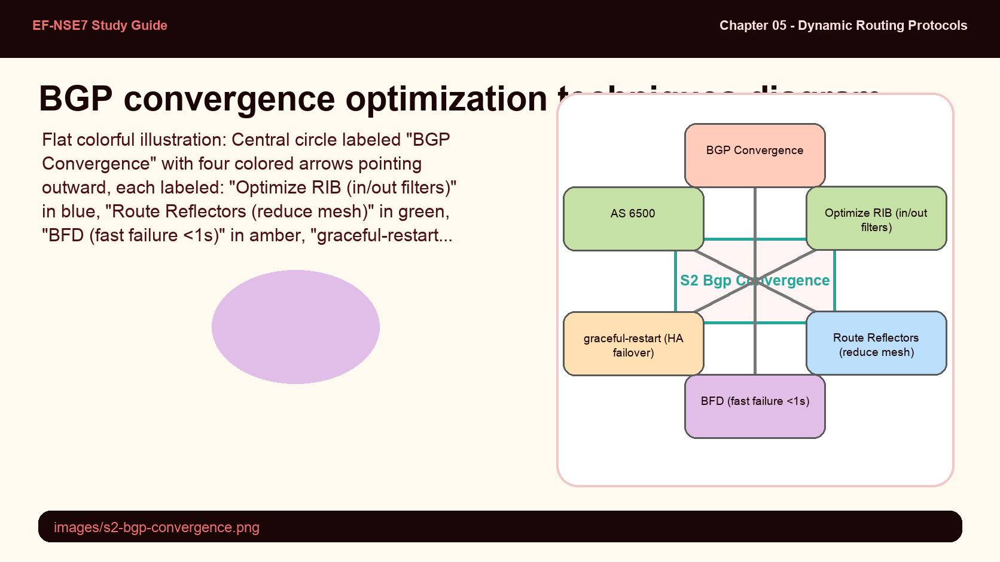
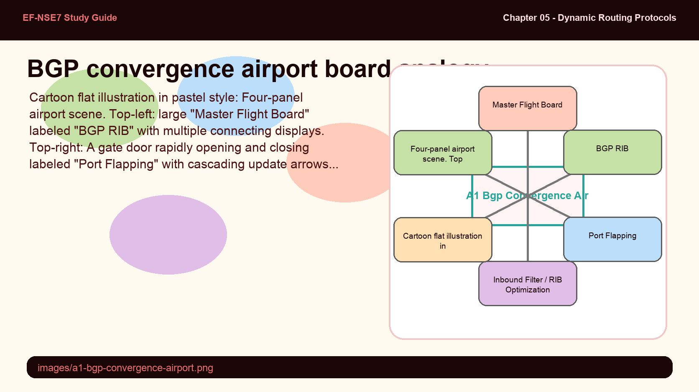
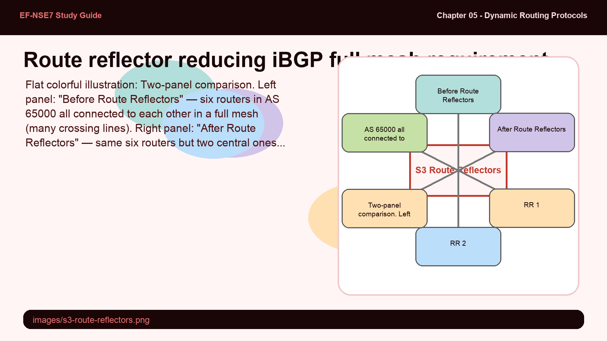
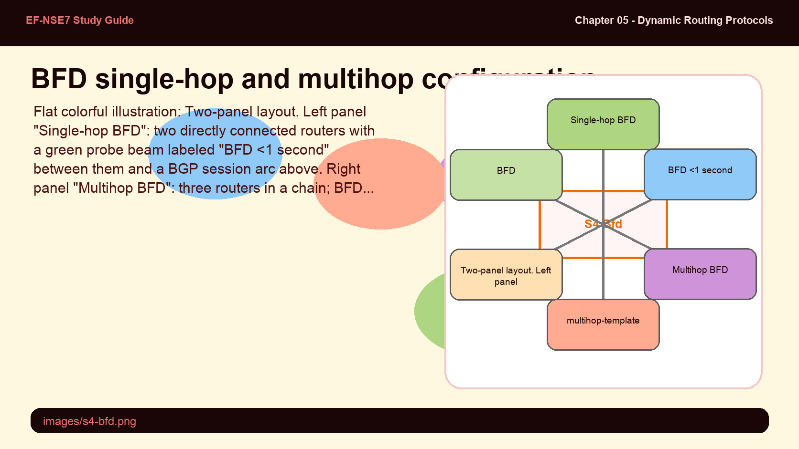
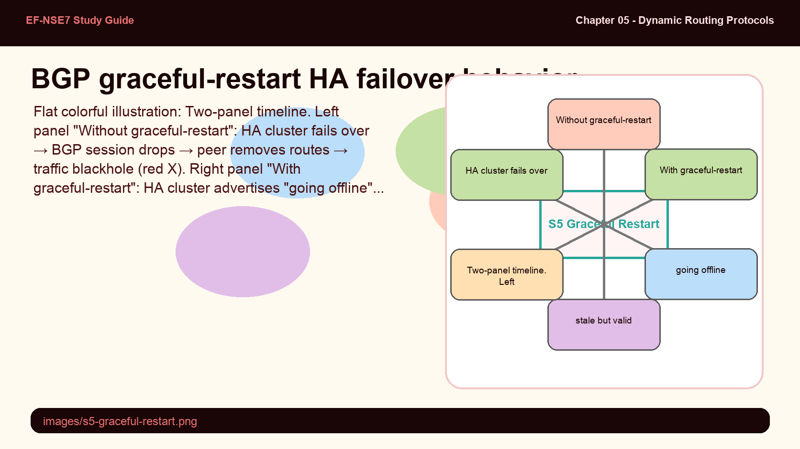

Route redistribution is how different routing protocols share information — but it comes with a fundamental risk: routing loops. When Router A redistributes OSPF into BGP, and Router B redistributes BGP back into OSPF, routes can loop infinitely. Both protocols disable redistribution by default — this is a safety mechanism, not an oversight.
- If you redistribute OSPF routes into BGP and then redistribute BGP routes back into OSPF on the same router, what happens — and how do you prevent the loop?
- What is the difference between configuring a "network" statement in OSPF versus using "redistribute connected" — specifically, what LSA type does each produce and how does this affect path preference?
Cross-Protocol Redistribution

Redistribution flows routes between protocols. Mutual redistribution without loop-prevention (route maps + tags) creates routing loops.
Route redistribution allows a router to take routes learned in one protocol and inject them into another. Both OSPF and BGP disable all redistribution by default — every protocol source (bgp, connected, isis, rip, static) must be explicitly enabled. This conservative default prevents accidental route injection.
Key redistribution concepts for both OSPF and BGP:
- OSPF redistribution: routes imported via redistribution appear as Type 5 LSAs (external); configured in
config router ospf → config redistribute - BGP redistribution: connected, static, and IGP routes can be redistributed into BGP via
config router bgp → config redistribute - Mutual redistribution: when routes are redistributed in both directions between two protocols, route maps with tags are required to prevent feedback loops
| Protocol | Redistribution Config Location | Default Status | Route Type in Receiving Protocol |
|---|---|---|---|
| OSPF receiving from BGP | config router ospf → config redistribute bgp | disabled | External (Type 5 / Type 7 in NSSA) |
| OSPF receiving connected | config router ospf → config redistribute connected | disabled | External (Type 5 LSA) |
| BGP receiving from OSPF | config router bgp → config redistribute ospf | disabled | BGP route in RIB |
| BGP receiving connected | config router bgp → config redistribute connected | disabled | BGP route in RIB |
# Enable redistribution of connected and static into OSPF:
config router ospf
config redistribute connected
set status enable
end
config redistribute static
set status enable
end
end
# Enable redistribution of connected and static into BGP:
config router bgp
config redistribute connected
set status enable
end
config redistribute static
set status enable
end
endBGP convergence has multiple independent contributors — RIB size, update processing speed, failure detection latency, and HA behavior. Each requires a different optimization tool. Port flapping is particularly damaging because it generates BGP update messages that consume CPU, destabilizing convergence across the network.
- The study guide states that port flapping "creates BGP update messages that require RIB processing and add to CPU load." Why does flapping on ONE interface generate update messages that affect ALL BGP peers?
- Why is "optimize the RIB size" listed as a convergence optimization? Isn't a bigger RIB with more routes better for routing accuracy?
BGP Convergence Optimization

Four levers for BGP convergence: RIB size reduction, route reflectors, BFD for failure detection, and graceful-restart for HA.
BGP convergence is the process of updating routing and forwarding tables after a topology change. BGP sends its entire routing table to directly connected neighbors — the larger the RIB and the more neighbors there are, the longer convergence takes. Four main optimization areas exist:
- Optimize RIB size — use inbound and outbound filters to exclude unnecessary prefixes. A smaller RIB means fewer paths to recompute on each update cycle.
- Route Reflectors — in iBGP, route reflectors eliminate the full-mesh requirement, reducing the number of BGP sessions and concentrating update processing.
- Fast failure detection — reduce BGP keepalive timers or enable BFD. BFD can detect failures in sub-second timeframes vs. BGP's default timer-based detection.
- HA failover stability — configure graceful-restart to prevent unnecessary BGP session resets and route withdrawals during planned HA failovers.
BGP convergence is like an airline updating its departure boards — a single gate change cascades through every connected display in the network.
- BGP RIB — the master flight schedule board that every gate display reads from
- Port flapping — a gate being repeatedly opened and closed, triggering board updates for every connecting flight
- Inbound filter (RIB optimization) — only displaying the flights relevant to this terminal, not every flight in the world
- Route Reflector — a central "hub display" that other terminals read from, instead of every terminal talking to every other terminal
- BFD — a sensor at the gate that instantly detects when the jetway disconnects, vs. waiting for a scheduled check-in timer

iBGP's split-horizon rule requires all iBGP routers to be fully meshed — N routers need N×(N-1)/2 sessions. In large ASes this is operationally unmanageable. Route reflectors solve this by designating one or more routers as concentrators that re-advertise iBGP routes to clients — breaking the full-mesh requirement.
- A route reflector forwards routes learned from one peer to other peers — this appears to break the iBGP split-horizon rule. Why doesn't this create routing loops?
- The study guide recommends configuring TWO route reflectors (RR1 and RR2). What would happen if only one route reflector existed and it failed?
iBGP Route Reflectors

Route reflectors eliminate the iBGP full mesh — clients peer only with the RR, which reflects routes between all clients.
In a fully-meshed iBGP network, every router must peer with every other router — N routers need N×(N-1)/2 BGP sessions. This scales poorly. Route Reflectors (RRs) solve this by acting as iBGP concentrators: each iBGP client peers only with the RR, and the RR forwards (reflects) routes learned from one client to all other clients.
The RR is configured by designating which neighbors are route-reflector clients. The RR itself defines the topology — it decides which neighbors are clients. Non-client iBGP peers must still form a full mesh between themselves (and between RRs). Loop prevention is handled via CLUSTER_LIST and ORIGINATOR_ID attributes added automatically by the RR.
config router bgp
config neighbor
edit 100.64.1.254
set next-hop-self enable
set route-reflector-client enable
next
end
end
# Verify:
get router info bgp neighborsKey deployment guidelines for route reflectors:
- Deploy at least two RRs per cluster for redundancy
- Enable
next-hop-selfon the RR so clients use the RR as the next hop — prevents next-hop unreachability when the original next hop is an eBGP peer - RRs pass routing updates to other RRs and border routers within the AS, improving convergence
- RRs eliminate the administrative burden of managing a full mesh — critical in large enterprise or SP networks with dozens or hundreds of iBGP speakers
BGP relies on keepalive timers for failure detection — by default, a peer is considered dead only after the hold-down timer expires (typically 90 seconds). BFD runs independently of BGP and can detect failures in under one second. This is a massive convergence improvement, but BFD has configuration requirements — particularly for multihop sessions where the BFD probe must traverse multiple routers.
- BFD is described as "independent of the type of media" — what does this mean for its usefulness compared to link-layer failure detection like Ethernet carrier-detect?
- For BFD on a multihop BGP session (like a loopback-sourced session), a "multihop-template" is required. Why can't the same single-hop BFD mechanism work for multihop paths?
BFD — Bidirectional Forwarding Detection

BFD detects failures in under 1 second, independently of BGP timers. Multihop BFD requires a multihop-template for paths across intermediate routers.
Bidirectional Forwarding Detection (BFD) is a protocol that acts as a lightweight "heartbeat" probe between two routers. It operates independently of BGP and can detect one-way device failures in less than one second — far faster than BGP's keepalive-based detection which typically takes 90 seconds. BFD is media-independent: it works the same over Ethernet, MPLS, GRE tunnels, or any IP path.
For standard BGP sessions (direct neighbors), BFD is enabled per-neighbor with a single command. The BFD session is established automatically when both routers have BFD enabled on the session.
config router bgp
config neighbor
edit 100.64.1.254
set bfd enable
set ebgp-enforce-multihop enable
next
end
end
# Verify BFD status:
get router info bfd neighborFor multihop BGP sessions (e.g., loopback-sourced eBGP), BFD requires a multihop-template that specifies the source and destination IP ranges and optional authentication:
config router bfd
config multihop-template
edit 1
set src 100.64.2.0 255.255.255.0
set dst 100.64.1.0 255.255.255.0
set auth-mode md5
set md5-key password
next
end
endBFD must be configured on both connected routers and their corresponding interfaces. For multihop paths, the template must be configured on both ends with matching source/destination ranges.
BGP graceful-restart is designed specifically for HA failover scenarios. When an HA cluster fails over, the BGP daemon must restart on the new primary — and peers would normally interpret this as a session failure, withdrawing routes. Graceful-restart prevents this by pre-announcing the intent to restart, causing peers to keep routes stale (but usable) during the reconnection window.
- Graceful-restart must be configured on BOTH connected routers. What happens if only one router has graceful-restart enabled — does it still work?
- Graceful-restart is described as preventing routes from being "treated as a route flap." What is the practical traffic impact of a route flap during an HA failover, and why does graceful-restart prevent it?
The graceful-restart Command — HA Failover Protection

Graceful-restart prevents BGP peers from withdrawing routes during HA failover — routes remain usable while the new primary reconnects.
In a FortiGate HA cluster, the BGP daemon runs only on the primary unit. When the primary fails and a secondary takes over, BGP peering must be re-established from scratch. Without graceful-restart, peers interpret the session drop as a failure and immediately withdraw all routes received from the cluster — creating a traffic blackhole until the new primary reconnects and re-advertises.
The graceful-restart command allows the FortiGate HA cluster to advertise its intent to restart before going offline. Peers honor this by keeping routes in their routing tables as stale (but still forwarding-capable) for the duration of the restart window. When the new primary comes online, it re-establishes the session and refreshes the routes — without causing a traffic disruption.
config router bgp
set as 65100
set graceful-restart enable
set router-id 172.16.1.254
config neighbor
edit 100.64.1.254
set capability-graceful-restart enable
set remote-as 200
next
end
endTwo parameters work together for graceful-restart:
set graceful-restart enable— enables the graceful-restart feature globally on the BGP routerset capability-graceful-restart enable— per-neighbor setting that advertises the graceful-restart capability to the specific BGP peer so both sides negotiate the behavior